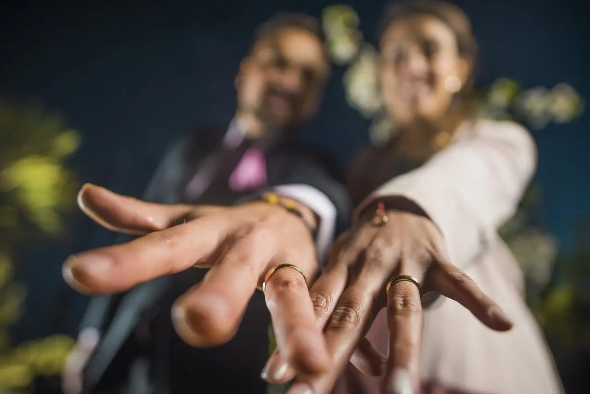
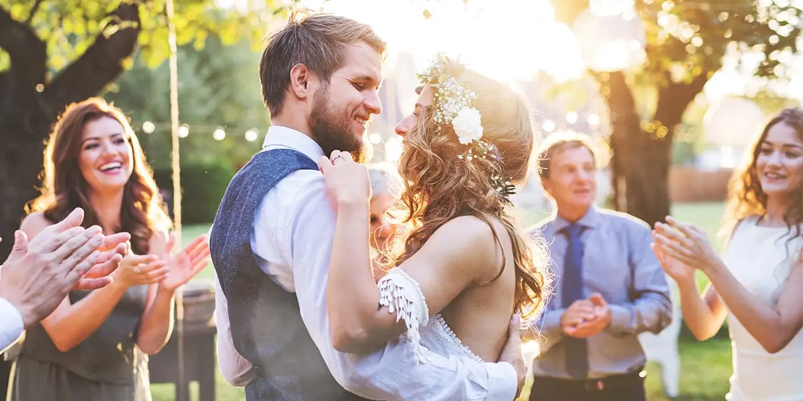

"Tú día en un hermoso recuerdo"
Agenda tú evento con anticipación





Cobertura Eventos
- - Fotografía desde los preparativos hasta la fiesta.
- - Captura de momentos clave como el primer baile y el intercambio de votos.
Sesión Preboda
- - Sesión romántica en exteriores para generar un recuerdo único.
- - Fotografías ideales para invitaciones o decoración.
Sesión Postboda
- - Sesión en un lugar especial después del matrimonio.
- - Perfecta para tomas creativas sin la presión del evento.
Fotografía de Detalles
- - Captura de elementos clave como anillos, decoración y el vestido.
- - Imágenes ideales para álbumes o redes sociales.
Álbum
- - Diseño personalizado en formato físico y digital.
- - Edición profesional para destacar los mejores momentos.
Video de Resumen
- - Edición dinámica que captura los momentos más emotivos del evento.
- - Perfecto para compartir en redes sociales o guardar como recuerdo.
Sesión Familiar
- - Fotografías con los seres queridos en un ambiente relajado.
- - Incluye retratos grupales y espontáneos.
Impresión Gran Formato
- - Impresión de fotografías seleccionadas en canvas o papel fotográfico.
- - Calidad premium para decorar tu hogar o regalar.